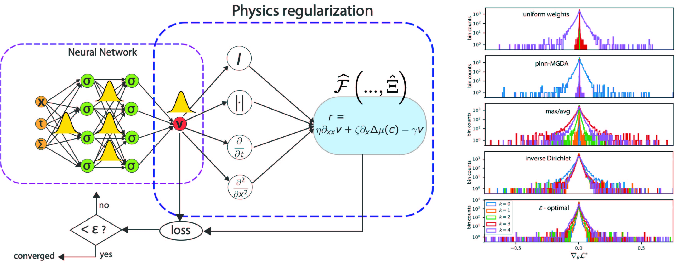
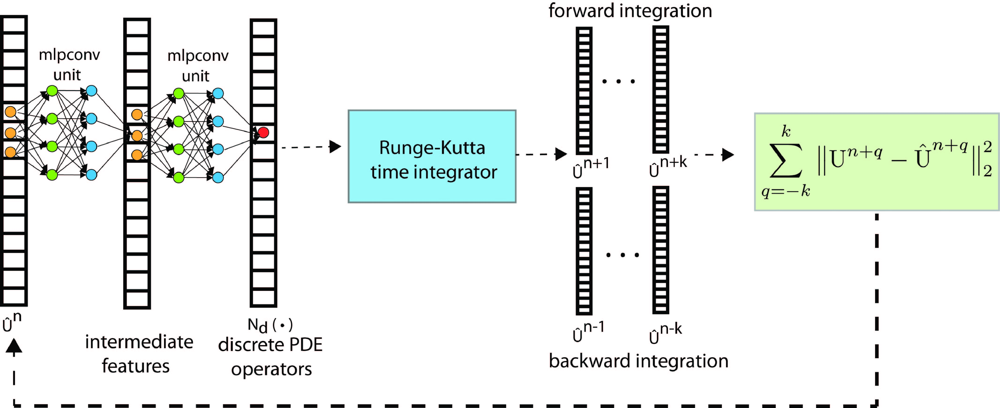
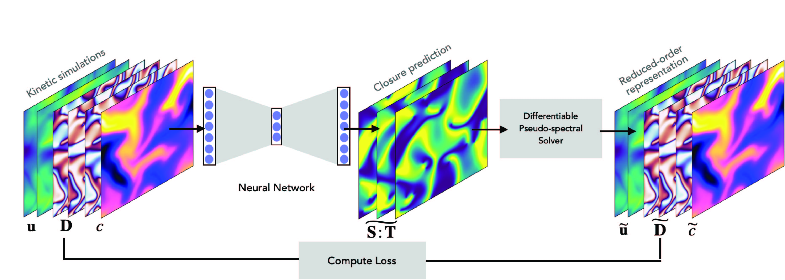
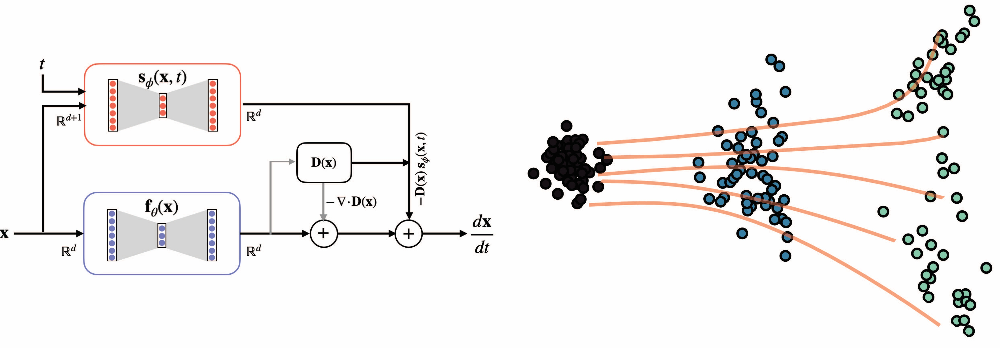

My research combines classical first-principle approaches with modern AI/ML techniques to develop predictive, interpretable models for solving forward and inverse problems in the life sciences.
Research
Learning physically consistent differential equations from microscopy videos
During my Ph.D, I developed robust statistical techniques for inferring physically consistent PDEs and
ODEs from noisy, limited data. I developed a new sparsity promoting algorithm called Iterative Hard Thresholding with debiasing (IHT-d) which in
combination with the theory of stability selection enabled learning differential equations with minimal parameter tuning.
Balanced optimization multi-objective optimization with Physics-Informed Neural Networks (PINNs)
Physics-Informed Neural Networks serve as promising means to integrate physical priors based on differential equations with the universal approximation properties of neural networks to solve forward and inverse problems in physical and life-sciences.

Learning neural operators with application to inferring closure models of active fluids
Using rotationally and translationally invariant representation of second-order tensorial functions, we learn closure models that outperform classical closures. To ensure temporal stability of the inferred closures, we use a Model Predictive Control strategy and adjoint optimization to learn closures that are fast, accurate and stable.


Inferring the dominant physical mechanism driving spindle self-organization
In collaboration with experimentalist at Prof Daniel Needleman's lab, we investigated the physical basis of spindle organization in HeLa cells. Using static ultrastructural data from electron microscopy and dynamic data from light microscopy, we condition a minimal coarse-grain model to infer key materials properties of the spindle.
Inferring transcriptional flow dynamics from cross-sectional data
Leveraging recent advances in score-based generative modeling, we propose a novel strategy for bridging cross-sectional data acquired from RNAseq. Our method termed Probability Flow Inference (PFI) faithfully interpolates between the observed marginals while accommodating for general noise forms. Using biological curated models, we illustrate how an incorrect choice of noise model leads to inaccurate inference of the underlying genetic program.

Selected Papers
Maddu, S., “Stability selection enables robust learning of differential equations from limited noisy data”,
Proceedings of the Royal Society A, vol. 478,
no. 2262, 2022. doi:https://doi.org/10.1098/rspa.2021.0916.
PDF
Maddu, S., “Learning physically consistent differential equation models from data using group sparsity”,
Physical Review E, vol. 103,
no. 4, 2021. doi:https://doi.org/10.1103/PhysRevE.103.042310.
PDF
Maddu, S., “Inverse Dirichlet weighting enables reliable training of physics informed neural networks”,
Machine Learning: Science and Technology, vol. 3,
no. 1, 2022. doi:10.1088/2632-2153/ac3712.
PDF
Maddu, S., “STENCIL-NET for equation-free forecasting from data”,
Scientific reports, vol. 13,
no. 1, 2023 doi:https://doi.org/10.1038/s41598-023-39418-6.
PDF
Maddu, S., Chard\{`}es, V. “Inferring biological processes with intrinsic noise from cross-sectional data”,
arXiv, 2024.
PDF
Chard\{`}es, V., Maddu, S. “Stochastic force inference via density estimation”,
NeurIPS 2023 AI for Science Workshop.